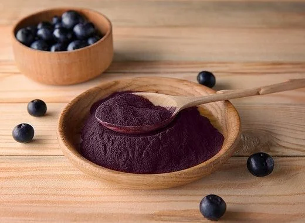

O açaí é considerado um dos alimentos mais completos quando se fala em benefícios para a saúde e para o bem-estar. Por ser uma fonte natural de energia, ele é amplamente consumido por pessoas que precisam de disposição extra para enfrentar a rotina ou praticar atividades físicas, funcionando como um combustível saudável para o corpo. Seus altos teores de antioxidantes ajudam a combater os radicais livres, prevenindo o envelhecimento precoce das células e reduzindo riscos de doenças degenerativas.
Outro benefício importante está em suas gorduras boas, como os ácidos graxos do tipo ômega, que auxiliam no equilíbrio do colesterol e favorecem a saúde do coração e da circulação sanguínea. A presença significativa de fibras contribui para a regulação do intestino, melhora a digestão e aumenta a sensação de saciedade, sendo um aliado em dietas equilibradas. Além disso, o açaí é rico em vitaminas e minerais essenciais que fortalecem o sistema imunológico, ajudam na manutenção da massa muscular e favorecem a recuperação após exercícios intensos.
O consumo regular também está relacionado à melhora da memória e da concentração, já que seus compostos bioativos atuam positivamente na saúde cerebral. Sua ação anti-inflamatória auxilia na redução de dores musculares e articulares, promovendo bem-estar geral. Por ser altamente nutritivo, contribui para a vitalidade, protege o organismo contra infecções e ajuda a manter o corpo em equilíbrio.
